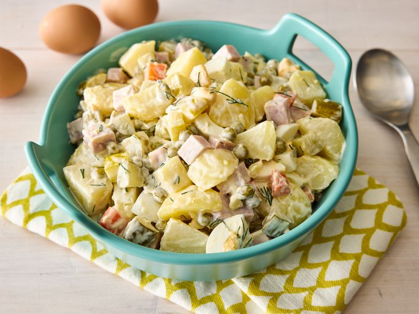

Olivye

Description
This Russian salad recipe is what my mom and grandmother make every time there's a family gathering or a special occasion. Leave out the ham to make this a vegetarian dish.
The potatoes, carrots, and eggs do not have to be completely chilled after boiling.
Ingridients
- 6 potatoes, peeled
- 1 carrot, or more to taste
- 4 whole eggs
- 6 large pickles, cut into cubes
- 1 (15 ounce) can peas, drained
- ½ cup cubed fully cooked ham, or to taste
- 1 tablespoon chopped fresh dill, or to taste
- ½ cup mayonnaise, or to taste
Steps
- Gather all ingredients. Bring a large pot of water to a boil.
- Add potatoes, bring to a boil, and cook for 5 to 10 minutes. Add carrots and whole eggs and continue boiling until potatoes are tender, 10 to 15 minutes.
- Drain and slightly cool mixture.
- Chop potatoes and carrot. Peel and chop eggs.
- Mix potatoes, carrot, eggs, pickles, peas, ham, and dill together in a large bowl.
- Stir in mayonnaise until salad is evenly coated.
Back to Homepage